Jordan Sowunmi is a brand and cultural strategist, currently Senior Vice President of Strategy at .
Working at the intersection of advertising, music, and internet culture, his career has taken shape with great teams at companies like , ,  ,
,
Across these roles, Jordan has developed integrated strategy and content for brands including , , , , , , — with recognition from , , , 
Alongside agency work Sowunmi is the co-founder of  
His writing has appeared in , , 
To discuss a project or just say hi, send me an email: hello@jordansowunmi.com